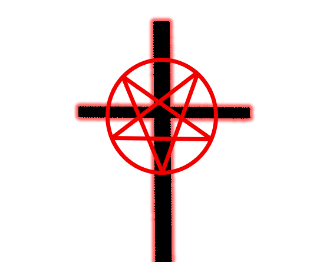

Brothers and sisters of the Lord, I call to you on this glorious day to gather in prayer, for we are in times of filth and sins across this world and we can no long stand idle.
I implore all of you to open your third eye and join me in the mission to cleanse the world.
The world shall know true pain.
Open your third eye and see the past that haunts us.
Open your third eye and see the future repeating it's mistakes.
Open your third eye and see the sins that's plaguing this world.
Open your third eye and see the truth in all the lies.
Open your third eye and see the Him, the one true Lord.
Open your third eye and see the real world.
The link at the bottom of the page will open your third eye.
Brothers and sisters, we shall meet each other when we cross this mortal plane and enter the celestial plane. Beware of the False Shepherd that hides among us...
NON-BELIEVERS SHALL PERISH SHOULD THEY TRY TO RECEIVE THE ABILITY GRANTED BY OUR ONE TRUE LORD!
